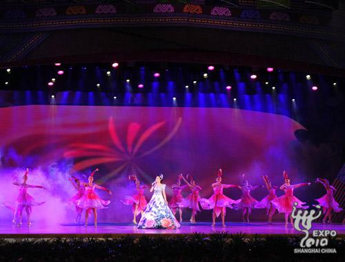
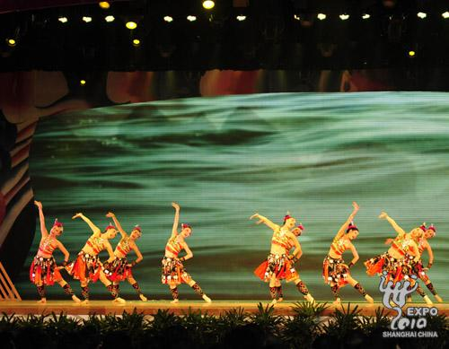
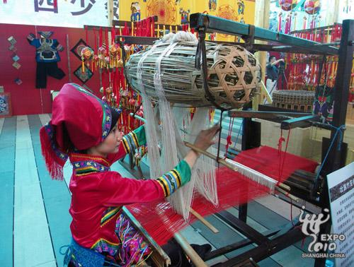

世博网8月2日消息：中国2010年上海世博会广西活动周开幕式今天上午举行，中共中央政治局委员、上海市委书记俞正声出席，广西壮族自治区党委书记、自治区人大常委会主任郭声琨宣布广西活动周开幕。
上海市委副书记、市长韩正，广西壮族自治区党委副书记、自治区主席马飚分别致辞。出席开幕式的上海、广西两地领导还有：刘云耕、冯国勤、杨雄、马铁山、沈北海、陈武、余远辉等。 广西壮族自治区副主席高雄主持开幕式。
韩正对广西给予上海世博会的大力支持和积极参与表示衷心感谢。韩正说，今天开幕的广西活动周一定会让更多的海内外游客了解广西、热爱广西。相信通过活动周一定能增进沪桂两地的友谊，推动两地间的合作与交流再上新台阶，祝上海世博会广西活动周取得圆满成功。
马飚表示，上海世博会是继北京奥运会后中国举办的又一国际性盛会。广西活动周将借助世博这个大舞台，让世界更好了解广西，让广西更好地走向世界。真诚欢迎中外朋友们走进广西馆，融入广西周，亲身领略八桂大地的神奇美丽，在广西风光秀美的绿色家园里放飞共同的梦想。
在随后的文艺演出中，广西代表团带来了歌舞《壮乡美，欢腾八桂》、歌曲《山歌好比春江水》、壮族民歌《阿依莎娜·妮亚》以及大型歌舞《大地飞歌》，引领现场观众走入美丽的壮乡风情。

活动现场的精彩表演
演出尽显广西地域风情
壮族妇女演示如何使用壮族竹笼机据悉，从今天至8月6日，广西活动周将连续五天为参观者奉上特色民族文化大餐。宝钢大舞台的“壮美广西”每日将演出两场，展现广西本土民间歌舞；广西的“非物质文化遗产”传承人、民间艺人和专业艺术家将以情景戏剧的表演方式，在宝钢小舞台奉献“民俗广西”的演出；庆典广场则将上演《欢腾广西》，马山会鼓、高桩狮子、壮族嘹歌、高腔诗雷、多耶大联欢等节目将与游客见面。此外，园区内每日还将举行踩街巡游《声动广西》，巡游队伍将以壮乡板鞋队伍、会鼓队伍、打扁担队伍为主体，配以壮族铜鼓、凌云长号等民族乐器，展示欢快热烈的广西风情。
除园区内的文艺演出及非物质文化遗产展示之外，广西活动周还将在园区外举办“深化广西与长三角面向东盟合作发展论坛”、“北部湾经济区腾飞—— 广西与英国商界交流会”、“科技支撑广西千亿元产业推介会”等一系列活动，以展示广西在文化、科技、生态、经济等领域所取得的成就，深化广西与长三角地区的合作，为两地企业搭建交流合作平台。